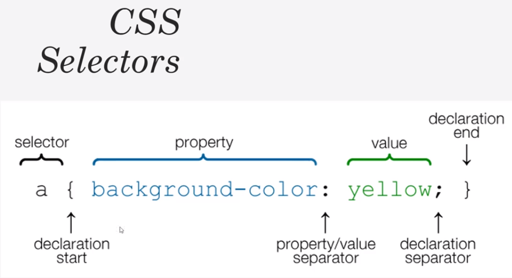
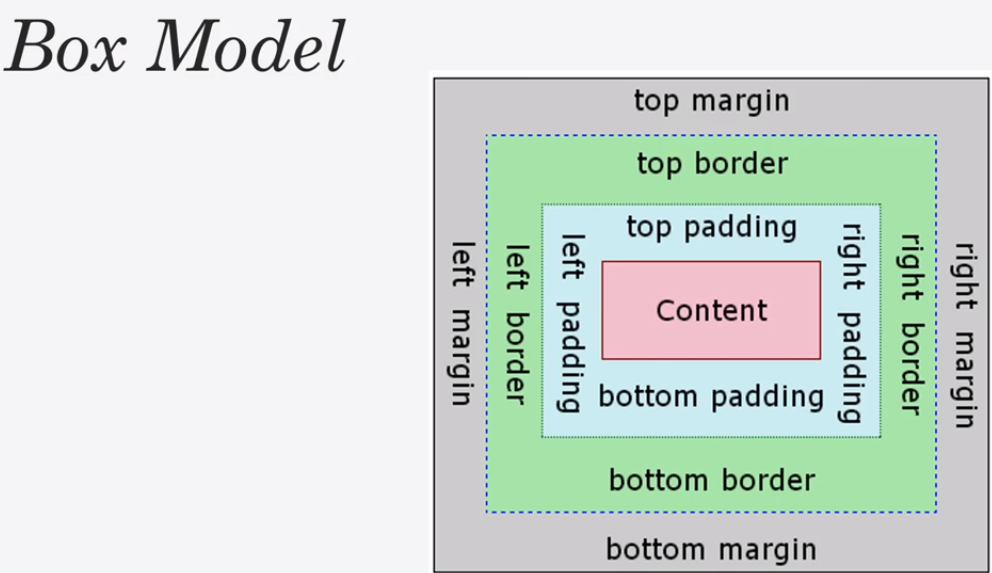

What is CSS?
- CSS - Cascading Style Sheet
- NOT a programming language
- Stylesheet/Styling language.
- Used for website layout & design
- A lot of freedom to be artistic and design how you'd like
- Can be extended with Sass/Less (allow for variables and conditions)
Different ways to add CSS
- Inline CSS - Directly in HTML (Don't do this, bad practice)
We want to seperate out presentation,functionality and style
- Internal CSS - using style tags in a head of HTML file
Not scalable - only works for HTML pages it's defined in. We want to keep HTML files minimal
- External CSS - linking an external .css file
Recommended - reusable and scalable
Selecting to style
- HTML elements, ie div{}
- ids (ids should be unique), select by using #, ie #idName{ }
- classes (classes may be reused on other elements), select by using ., ie .className{ }

CSS colors
- Color Names ie red
- HTML5 Color names ie coral
- Hexadecimal, ie #00ff00
- rgb values, rgb(0,0,255)
Common CSS props
- font
- padding, border, margin
- color
- Container class- Set width, height as %s instead of px or em
Makes things responsive
- float
- clear:both; - clears any floats above
- box-sizing:border-box
- position (fixed, absolute, relative)
- Responsive - min-height, %
- media queries, adjust css when width falls under a certain width - @media(max-width:500px{}
